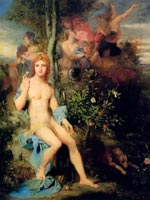

Музи в давньогрецькій міфотворчості богині і покровительки мистецтв і наук. Музи вважалися дочками Зевса і богині пам'яті Мнемосіни. Слово "муза" походить від грецького "Муса" ("мислячі"), їх ще називали Аоніди, аонійскімі сестрами, парнасідамі, касталідамі, піерідамі і іпокренідамі.
Всього було дев'ять сестер: Мельпомена - муза трагедії, Талія - муза комедії, Каллиопа - муза епічної поезії, Евтерпа - муза лірики, Ерато - муза любовних пісень, Терпсихора - муза танців, Кліо - муза історії, Уранія - муза астрономії і Полігімнія - муза священних гімнів.
Богині зазвичай виступали під проводом покровителя мистецтв Аполлона, який отримав від богів друге ім'я Мусагет. Їх імена, крім Урании ( "небесної") і Кліо ( "дарує славу"), пов'язані зі співом, танцями, музикою, насолодою. Цим богиням поклонялися вчені мужі і діячі мистецтва Стародавньої Греції. Спочатку головними місцями шанування муз були беотійскіе міста АСКРО і Феспії, на схилах Гелікону, де знаходилися і стародавні школи віщунів і співаків; таке з'єднання школи з центром культу, ймовірно, існувало і в Пієрії, біля північного підніжжя Олімпу, на батьківщині шанування муз, що називалися звідси Піерідамі.
Вважалося, що першими, хто приніс жертви музам на Геліконі, були поети і співаки, а жахливі велетні Алоади - Від і Ефіальт. Саме вони ввели культ муз і дали їм імена, думаючи, що їх всього три: Мелета (M?????, Досвідченість), мнемо (?????, Пам'ять), Айода (?????, Пісня). Через деякий час число муз було збільшено до дев'яти прибулим з Македонії ематійскім царем Піерію, який і дав їм імена. Ці олімпійські музи сходять до архаїчних хтоническим істотам. Про хтонічний минулому муз свідчить також те потомство, яке музи, будучи дочками землі Геї, народжували і від Зевса, і від Аполлона. Від Зевса і Калліопи народилися корибанти (Страбон, X 3, 19), за іншою версією, курети народилися від Талії і Аполлона (Аполдлодор, I 3, 4). Музи були жінками небесної краси, і це їх якість не пройшло повз увагу іншими богами. Багато з муз виробляли потомство від богів: наприклад, Талія народила від Зевса-шуліки сицилійських близнюків - Паліки; Мельпомена і бог Ахелой справили на світло жахливих істот сирен, котрі приваблюють своїм співом подорожніх і пожирають їх.
Олімпійські музи класичної міфології - дочки Зевса, вони живуть на Геліконі, оспівуючи всі покоління богів - Гею, Кроноса, Океану, Ніч, Геліоса, самого Зевса і його потомство, тобто вони пов'язують минуле і сьогодення. Їм відомо минуле, сьогодення і майбутнє. Вони покровителі співаків і музикантів, передають їм свій дар.
Музи наставляють і втішають людей, наділяють їх переконливим словом, оспівують закони і славлять добрі звичаї богів. Класичні музи невіддільні від впорядкованості та гармонії олімпійського світу (Гесіод 1-103). У стародавніх римлян богинями-покровителька поезії, відповідали грецьким музам, були камени.